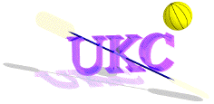

UKC Kayak Polo Media

Return to
UKC Index
Polo Page
Galleries
West Coast Tournament
(March 24th, 2001 - March 25th, 2001)
Press
King 5 Evening Magazine
(July 25th, 2006)
Komo 4 News
(July 15th, 2002)
Seattle Post-Intelligencer
(August 29th, 2002)
UKC Kayak Polo Media / UKC Webmasters
ukc-web@u.washington.edu